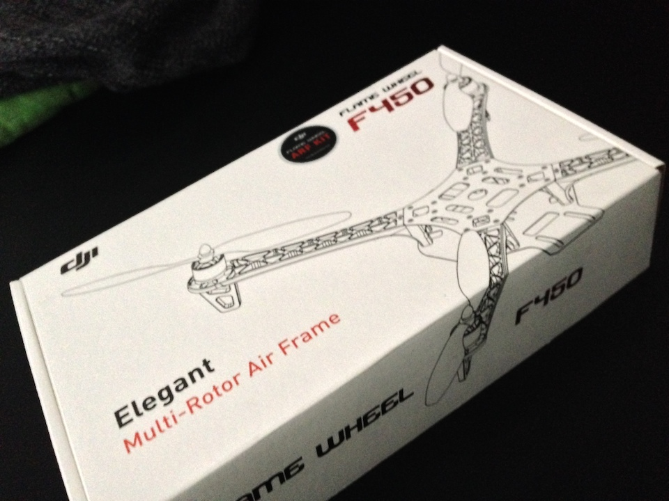
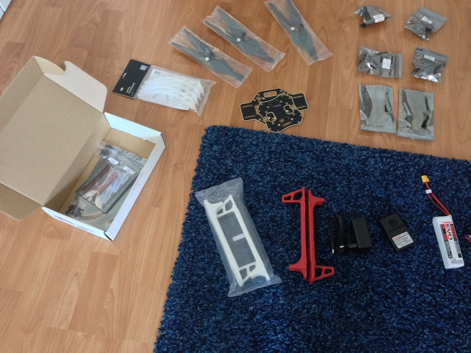
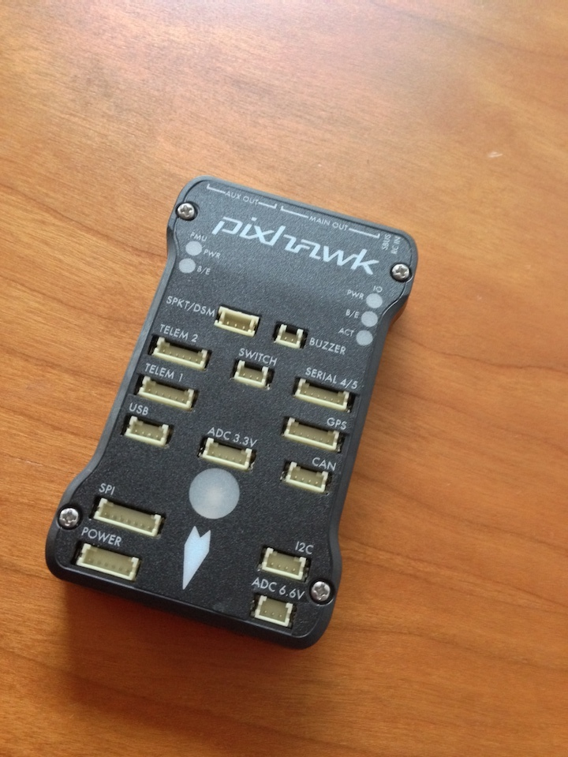

Today, let's see what parts are needed to build a quadcopter.
The hardware is basically a frame with 4 arms, 4 motors with an electronic speed controller (ESC) for each motor, 4 propellers, a power distribution board (PDB), and a LiPo battery. Most important, the flight controller is a small computing unit that controls input for the ESCs/motors.
Let's start with the frame, motors, and the stuff. I decided to build my copter based on a DJI Flamewheel frame.
There are lots of blog posts on the internet on what frame you should choose. Depending on the frame's wing-span you need motors, ESCs, and propellers that produce enough power to carry the quadcopter. All of these parts need to fit to each other. For example, the wing-span requires a certain propeller size, but a certain propeller size needs suitable motors and ESCs that are interoperable. Experienced quadcopter guys can tell you more precisely how these things are related to each other.

If you're a beginner like me, the easiest way is to choose an "Almost Ready to Fly" (ARF)-Kit. These kits ship with all the parts mentioned above and the parts are guaranteed to work with each other. I've also spoken to a friend of mine who build a copter and he's also used the DJI frames. So, that seems to be a good choice.
The Flamewheels come in different sizes. I've read that the smallest version (330) can also be used indoor. The larger ones (450, 550) come with nearly the same configuration and are for outdoor usage. The number tells you what size the copter is; e.g., the 330 has a diagonal wheelbase of 330mm and when used with 4.5in propellers the copter will have a size of approx. 42x42cm.
I choose the 450 Flamewheel for my quadcopter. One more benefit of the DJI frames is that they have a built-in power distribution board. You can see the bottom plate and upper plate in the middle of the picture below. The bottom plate has built-in contacts to connect the ESCs and batteries. Motors and ESCs are shown in the top right. Battery and charger are not included (bottom right); you need to buy this in addition. The landing gear (beneath the propellers) is optional.

The most important part of the quadcopter is the flight controller. It controls the motors and ESCs, thus powering the quadcopter. Flight controllers also have sensors such as accelerometers, gyroscopes, and GPS to stabilize and hold the copter's position. I've decided to buy a 3DR Pixhawk controller because its firmware is open-source and you can program it in C programming language (that's the one thing software engineers want to do).
Usually, the flight controller is connected to a radio antenna so that you can steer it with a remote control. For my purposes, I decided to not buy GPS module and radio equipment, because I will try to connect an Android smartphone to the Pixhawk (probably through a USB link). Then, I will mount the Android on the copter and use its camera, GPS, and wireless to establish a remote control. I guess that I will try to set-up a WiFi network and then use my other smartphone to remote control the quadcopter.

For now, the shopping list is:
Moreover, you need some "Kleinscheiss" to assemble the whole thing:
Next time, we'll solder the electrical stuff and assemble the frame.